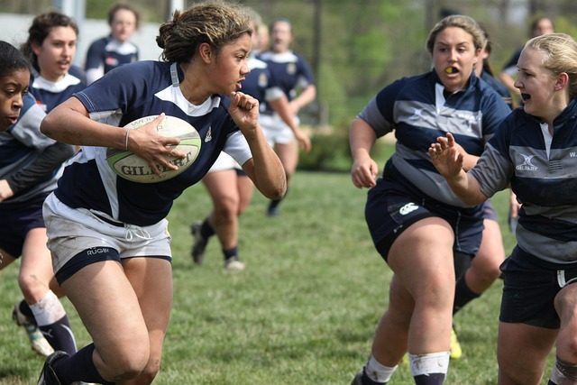
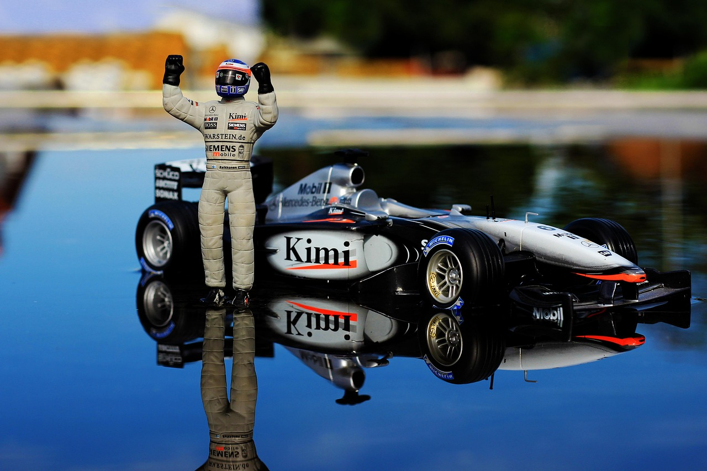

Motos

El español Marc Márquez (Ducati Desmosedici GP25) consiguió una magistral victoria en el Gran Premio de Tailandia de MotoGP que le otorga el liderato del campeonato del mundo 1.932 días después de lucirlo por última vez.
Y fue magistral porque Marc Márquez tuvo la sangre fría de dejar pasar a su hermano cuando contaba con más de un segundo de ventaja sobre él,...
Baloncesto

Ya ha pasado más de un mes del fichaje de Luka Doncic por los Lakers. Pese a que no comenzó con las mejores sensaciones por su estado físico, poco a poco la estrella eslovena se ha adaptado al equipo angelino liderado por LeBron James. Los Lakers suman seis triunfos consecutivos y ya se sitúan en segunda posición, con un balance de 38 victorias y 21 derrotas.
El triunfo ante los Clippers (108-102) dejó otra notable actuación de Doncic con los angelinos. El esloveno terminó con 29 puntos, seis rebotes y nueve asistencias en los 37 minutos en los que participó. Sin embargo, tuvo un gesto durante un tiro libre que no ha pasado desapercibido por los aficionados, llevándose una considerable lluvia de críticas en redes sociales.
Rugby y Soccer
La selección española de rugby tendrá un exigente test el próximo mes de noviembre tras conseguir su plaza para la próxima Copa del Mundo de Rugby de 2027 en Australia ante una de las grandes selecciones de Oceanía: Fiyi.
Este lunes la Federación de Rugby de Fiyi confirmó que el próximo mes de noviembre disputará tres encuentros en las Autumn Nations Series, las ventanas de otoño ante las selecciones de Inglaterra, Francia y España.
Los ‘Fiyianos Voladores’ se medirán ante Inglaterra el 8 de noviembre, ante Francia el 15 de ese mes, mientras que aún no hay fijada fecha para el duelo ante España, aunque también se disputará en noviembre de este año.
Fórmula 1
Aston Martin tendrá que esperar para que llegue una persona que iba a ser clave para el futuro del proyecto que quieren relanzar junto a Fernando Alonso. Los británicos ficharon a Enrique Cardile para que fuera el director técnico y trabajara codo con codo junto a Adrian Newey a partir de este mes de marzo. Sin embargo, Ferrari, no liberó al que fuera su jefe de chasis cuando se esperaba. Todo ingeniero debe esperar unos meses antes de empezar a trabajar con otro equipo de F1. Esto se conoce como el famoso 'gardening'.